Explore Valencia
A Brief History
Valencia was founded as a Roman colony and later flourished under Islamic and Christian kingdoms on the Mediterranean coast. Gothic silk exchange halls, Baroque churches, and the Turia gardens converted from a diverted river record agricultural wealth and 20th-century urban planning. Las Fallas festivals each March burn monumental satirical sculptures in the streets.
Attractions Map
Top Sights & Activities
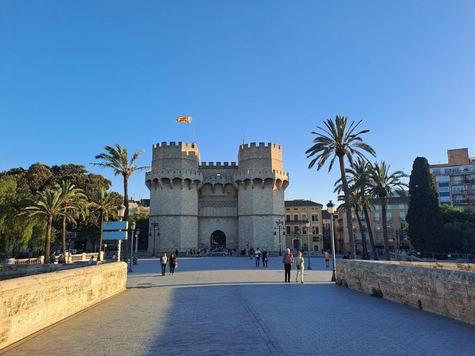
Torres de Serranos
The Serranos Towers, an imposing pair of Gothic-style towers, are remnants of Valencia's ancient city walls. Originally built for defense, they now offer panoramic views of the city and the river. The surrounding area is perfect for exploring on foot, with attractions like Plaza de la Reina, the Cathedral and Miguelete tower offering beautiful vistas after climbing 207 steps.
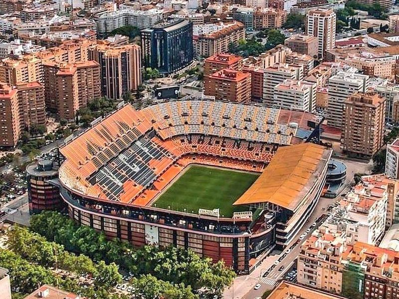
Mestalla Stadium
Mestalla Stadium, located in Valencia, Spain, has been the home of the Valencia Club de Futbol (VCF) since 1923. With a seating capacity of approximately 50,000 fans, it is known for its steep grandstands and intense atmosphere during matches. The stadium is considered one of Europe's most legendary stadiums and is a significant part of local culture. It is also noted for being family-friendly.
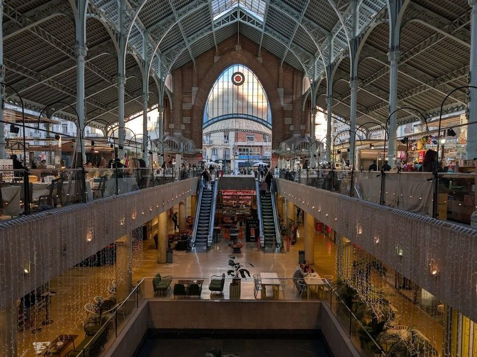
Mercado de Colón
Mercat de Colón, a historic market housed in a modernist building dating back to 1916, has been transformed into a vibrant dining and shopping destination. Situated in the Eixample district of Valencia, it offers an array of fresh produce stalls as well as diverse restaurants and bars. Visitors can savor an authentic organic horchata breakfast at Casa Orxata while enjoying the market's architectural splendor.
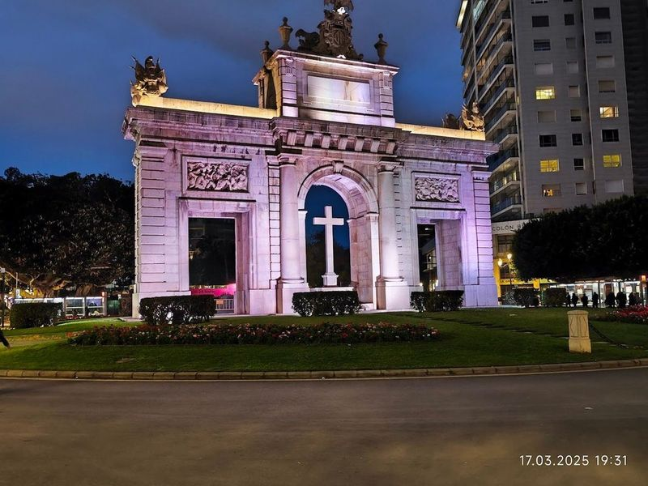
Puerta del Mar
Nestled in the vibrant heart of Valencia, Puerta del Mar stands as a tribute to history and resilience. This ornate monument, constructed in 1946, commemorates those who lost their lives during the Spanish Civil War. While it may resemble an ancient city gate, it's actually a modern replica that captures the essence of Valencia's architectural heritage.
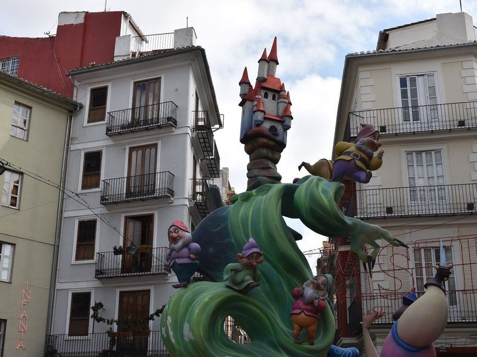
El Carmen
El Carmen is a vibrant old-town district in Valencia, known for its medieval gates and narrow streets lined with cafes, tapas bars, boutiques, and souvenir shops. The area comes alive at night with late-night bars and dance floors. Visitors can explore museums like the Institut Valencià d'Art Modern showcasing 20th-century international works. Cafe Madrid is a popular spot offering historic charm and signature cocktails like agua de Valencia.
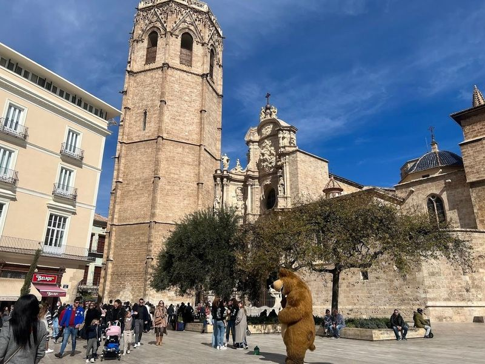
Plaza de la Reina
Nestled in the heart of Valencia, Plaza de la Reina is a vibrant hub that captures the city's lively spirit. This bustling square is flanked by charming restaurants and the Cathedral, making it an ideal spot for both locals and tourists alike. As you wander through this picturesque area, find delightful tapas bars like Sagardi taperia on Calle San Vicente Martir, where indulge in a variety of colorful dishes paired with exquisite Spanish white wines.
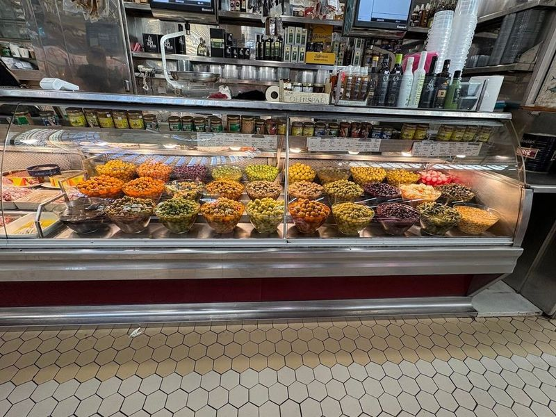
Central Market of Valencia
The Mercat Central de València is a vibrant and historic market housed in a Modernista building adorned with colorful tiles. It is one of the oldest food markets in Europe, offering an authentic glimpse into daily life in Valencia. The market boasts a diverse collection of stalls, each separated by type, where locals shop for regional produce such as live eels, various prawn varieties, and giant hams.
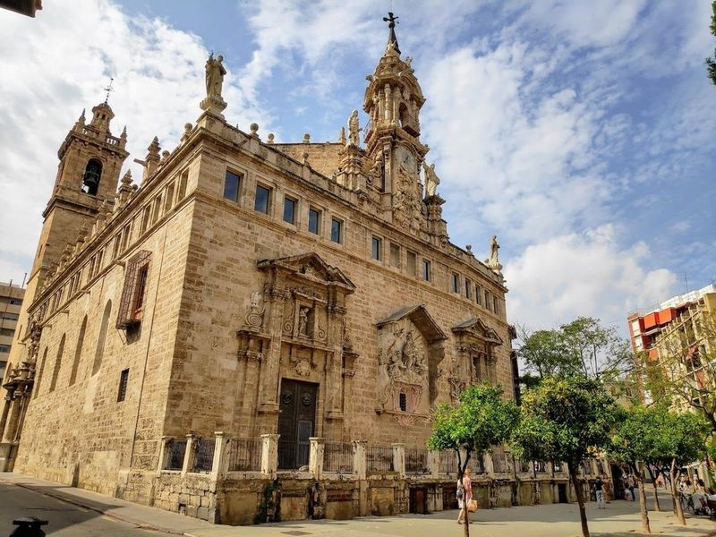
Real Parroquia de los Santos Juanes Valencia
The Església de Sant Joan del Mercat in Valencia, Spain is a historic Catholic church that boasts a triangular bell tower adorned with saintly statues. Also known as the Real Parroquia de los Santos Juanes or San Juan del Mercado, the church is situated near the Central Market and Llotja de la Seda building. Sadly, despite its beauty and significance, the church has been defaced by graffiti vandals.
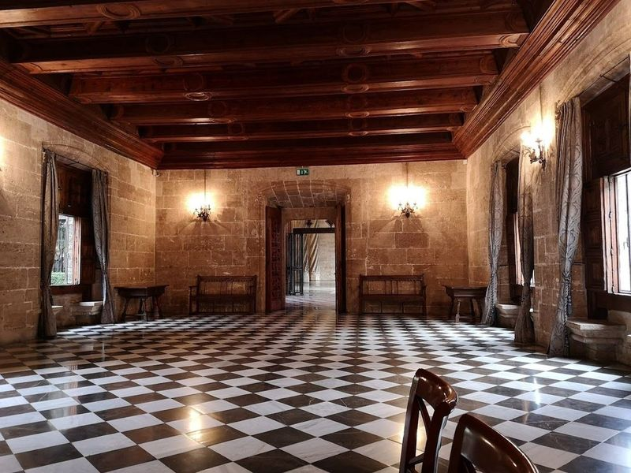
La Lonja de la Seda de Valencia
La Lonja de la Seda de Valencia, also known as the Silk Exchange, is a grandiose building that showcases the city's Medieval wealth through intricate stonework and carvings. It was once a symbol of Valencia's power during its economic boom in the 14th to 16th centuries due to silk production. The Merchant's Hall within the building is considered a magnificent jewel with its unique design featuring columns resembling palm trees and a ceiling meant to evoke a starry sky.
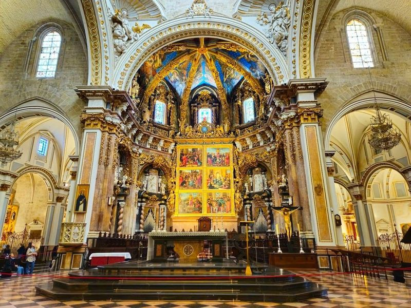
Valencia Cathedral
Valencia Cathedral is a example of Gothic architecture, renowned for its claim to house the Holy Grail. Nestled in the heart of Valencia, it stands proudly next to the Miguelete tower, which offers views after a climb up its 207 steps. The surrounding area is rich with history and beauty; nearby attractions include the picturesque Plaza de la Reina and the enchanting Patio de los Naranjos courtyard filled with fragrant orange trees.
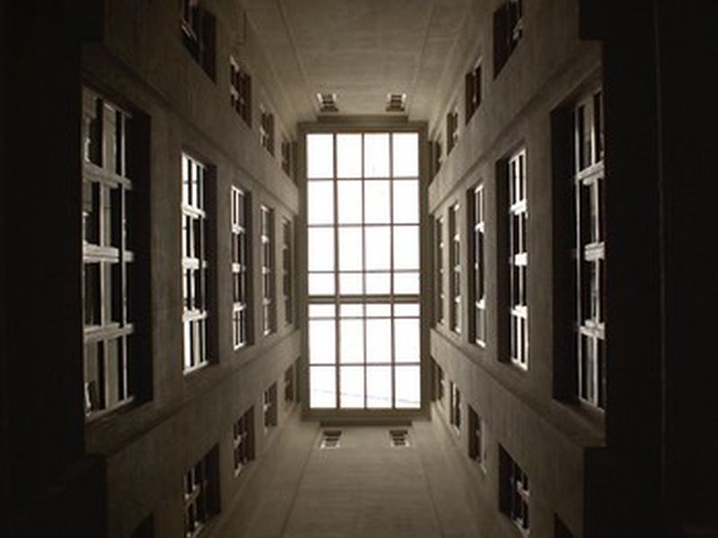
Plaça de la Reina
A bustling square featuring cafes, shops, and the entrance to the Valencia Cathedral and El Micalet tower. The site forms part of Plaça de la Reina's documented civic and cultural landscape within Valencia, with archives and visitor information available from municipal or regional heritage authorities.
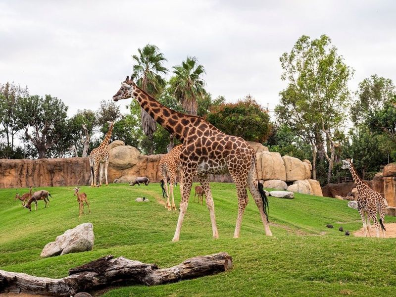
Bioparc Valencia
Bioparc Valencia is a unique zoo that houses nearly a thousand animals from 150 different African species. The park features specially designed habitats to ensure the well-being and comfort of the animals, offering visitors an immersive experience in various natural habitats. From vast savannas to dense forests, visitors can observe antelopes, giraffes, rhinoceroses, hyenas, buffaloes, leopards, gorillas, and elephants in recreated wild environments.
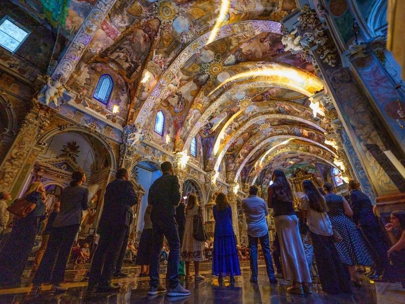
Iglesia Parroquial de San Nicolás de Bari y San Pedro Mártir
San Nicolás de Bari and San Pedro Mártir is a Gothic-style Catholic church known for its ornate baroque interior, gilding, and ceiling frescoes. The former Convento del Carmen has been transformed into the Centre del Carme Cultura Contemporania, while the prestigious Institut Valencia d'Art Modern (IVAM) and La Beneficencia offer modern museum experiences.
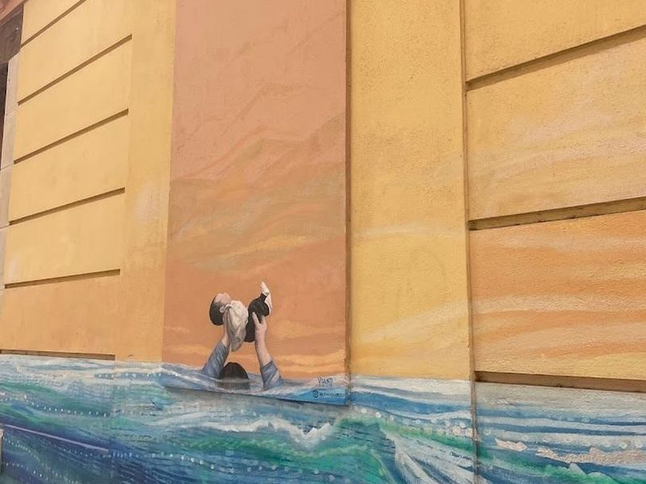
Portal de Valldigna
Portal de Valldigna is a venerable archway with unique architecture that dates back to 1440, serving as an entrance to the old Arab quarter of Valencia. The area surrounding it is home to several modern museums and exhibit centers, including the Centre del Carme Cultura Contemporania, Institut Valencia d'Art Modern (IVAM), and La Beneficencia. This historical Roman arch stands out amidst the colorful buildings of the old town and is surrounded by smaller alleyway streets.
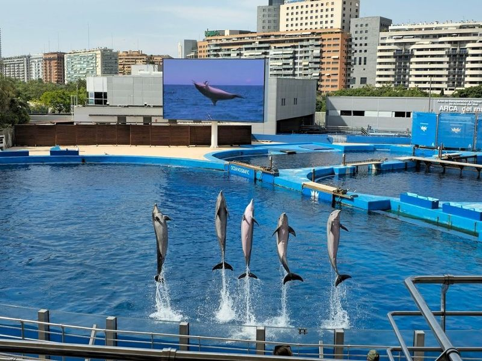
Oceanogràfic València
Oceanogràfic València is a mesmerizing destination that showcases the wonders of marine life, making it the largest aquarium in Europe. Nestled within the City of Arts and Sciences complex, this aquatic paradise features over 500 species from various ocean ecosystems. Visitors can embark on an journey through its immersive exhibits, including a thrilling shark tunnel and interactive touch pools where connect with sea creatures up close.
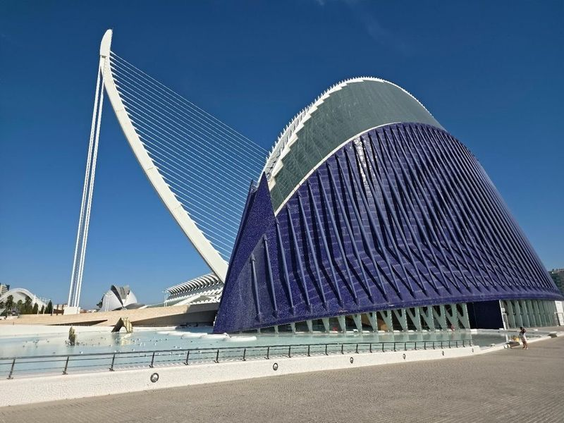
Ciudad de las Artes y las Ciencias
The Ciudad de las Artes y las Ciencias is a cutting-edge science complex located in a beautifully landscaped park. It features a large aquarium, an IMAX cinema, and various cultural and scientific institutions. The site forms part of Ciudad de las Artes y las Ciencias's documented civic and cultural landscape within Valencia, with archives and visitor information available from municipal or regional heritage authorities.
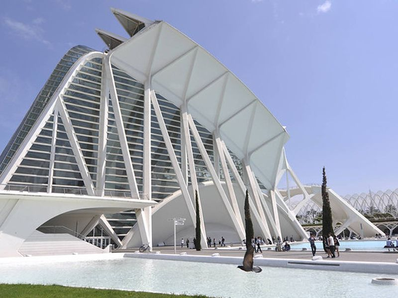
Museu de les Ciències Príncipe Felipe
An interactive science museum within the Ciudad de las Artes y las Ciencias, perfect for families and curious minds. The site forms part of Museu de les Ciències Príncipe Felipe's documented civic and cultural landscape within Valencia, with archives and visitor information available from municipal or regional heritage authorities.
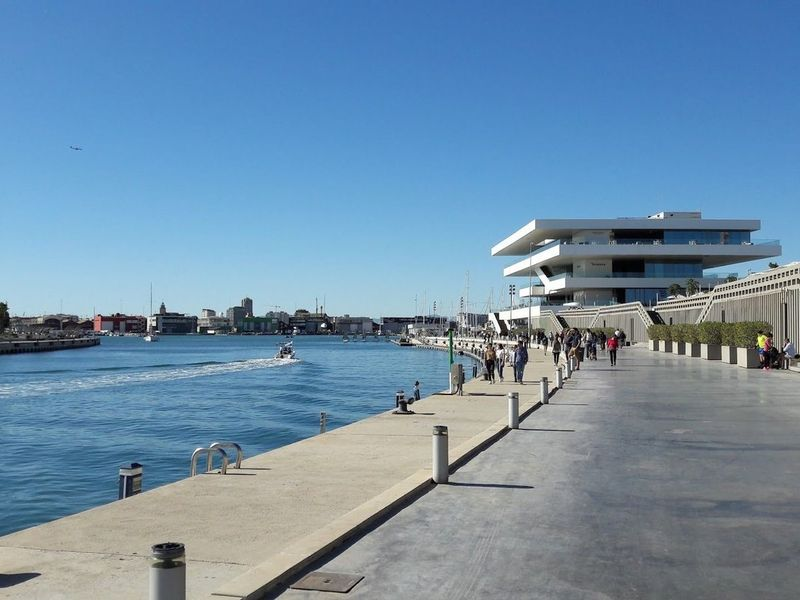
Veles e Vents
Veles e Vents, also known as the America's Cup Building, is a modern architectural marvel in Valencia. Designed by architects David Chipperfield and studio b720, this striking structure with white painted steel cladding and Brazilian timber decks has become a symbol of the city's cultural and architectural prowess since its inauguration in 2006. Situated next to the marina, it offers views of the harbor and is now a multipurpose event space known for its gastronomy and culture.
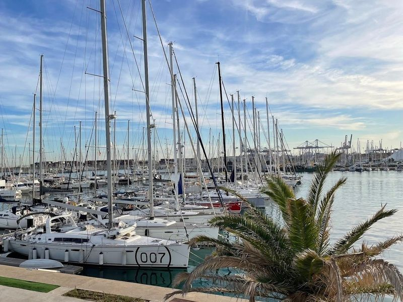
La Marina de Valencia
La Marina de València has become an site in the city, featuring trendy restaurants and bars by the sea, offering activities throughout the day. It's a recommended place for year-round strolls, with festivals and concerts adding to its vibrant atmosphere. The area boasts a beautiful and expansive promenade with a skating rink for all ages, children's play areas, sailing excursions, and even spaces where people gather to dance to their own music.
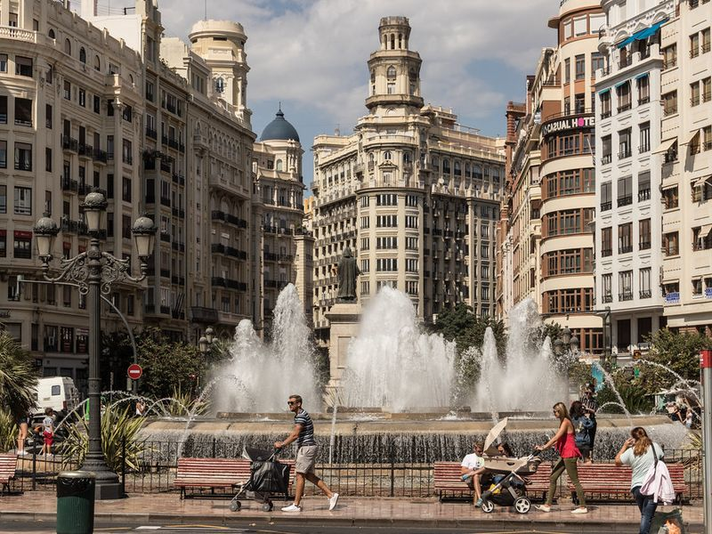
Plaça de l'Ajuntament
The site forms part of Plaça de l'Ajuntament's documented civic and cultural landscape within Valencia, with archives and visitor information available from municipal or regional heritage authorities. The site forms part of Plaça de l'Ajuntament's documented civic and cultural landscape within Valencia, with archives and visitor information available from municipal or regional heritage authorities.
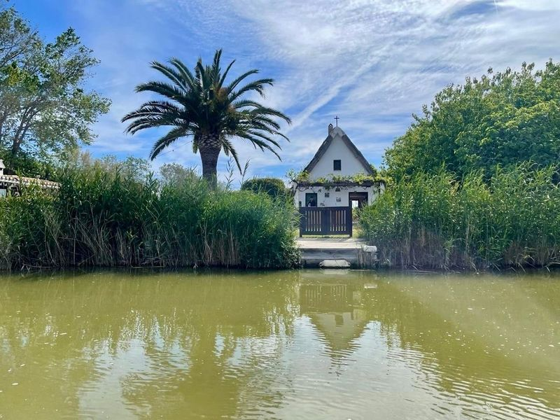
Parque Natural de la Albufera
Parc Natural de l'Albufera, located 8km south of the city, is a significant wetland in Spain. The surrounding rice fields create a golden backdrop in autumn. Despite the presence of factories, the park's beauty shines through at dusk. Visitors recommend experiencing a sunset here with loved ones and enjoying affordable boat trips or even renting one for a dinner cruise.
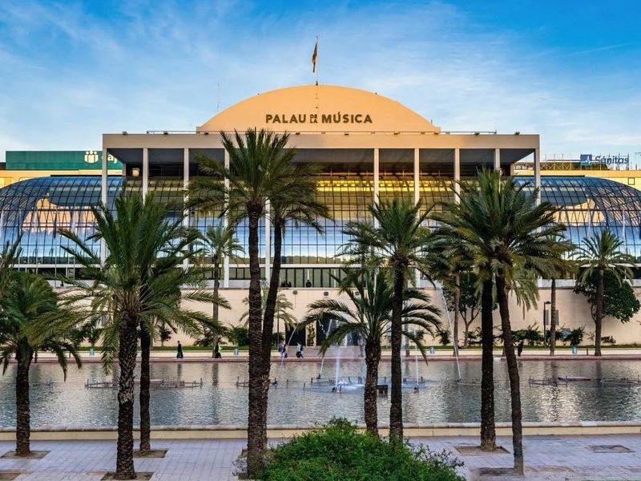
Palacio de la Música
Palau de la Música de València is a renowned venue in Valencia, surrounded by a park and gardens, hosting orchestra performances, concerts, and various cultural events. It features an impressive program with orchestras, solo performances, jazz, poetry, flamenco, and more from both local and international artists. The venue has welcomed esteemed musicians like John Scofield, Ron Carter, Joe Lovano, Dave Douglas, Snarky Puppy and Silvia Perez Cruz for its Jazz Festival.
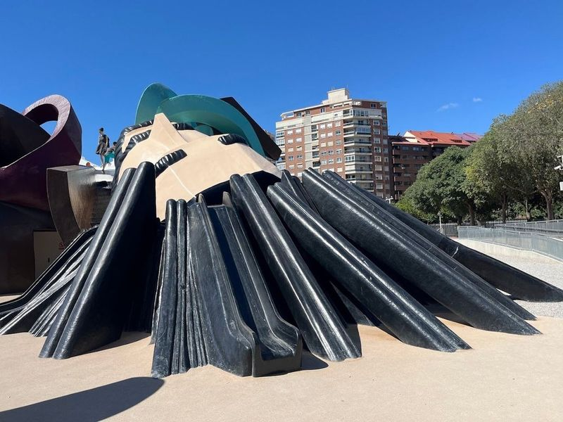
Gulliver park
Gulliver Park is a whimsical playground nestled within the renowned Turia Park in Valencia, also known as El Rio. This unique park brings to life the character from Jonathan Swift's classic tale, "Gulliver's Travels." Here, children can explore a massive play structure designed to resemble Gulliver himself, who appears immobilized on the ground with ropes. Kids can climb his torso, slide down his hair, and even hide in his pants—creating an imaginative adventure for visitors of all ages.
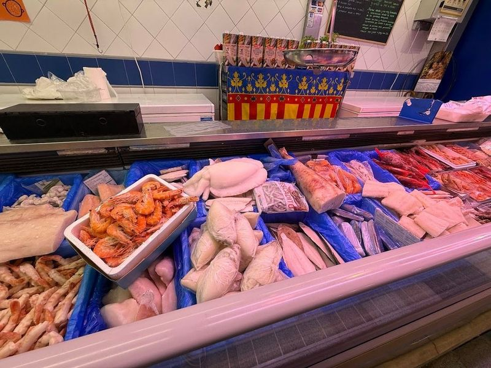
Mercado de Ruzafa
Mercat de Russafa, located in the vibrant Ruzafa neighborhood of Valencia, is a traditional market established in 1957. The modern building houses over 60 vendors offering a variety of local produce, meat, seafood, and other food products. The market's colorful exterior makes it a standout in the area. Visitors can enjoy a culinary experience with lower prices compared to other markets in Valencia.
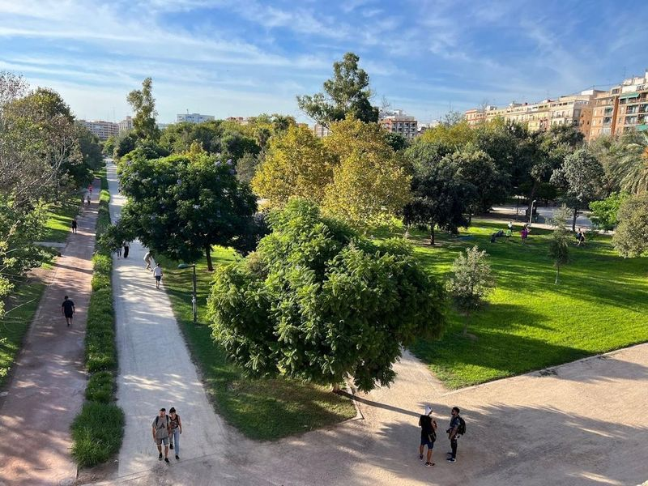
Jardín del Turia
Jardí del Túria - Tram VIII is a picturesque park in Valencia that follows the path of a former riverbed, offering a scenic route through the city center. The 9km green space is adorned with orange trees and palm trees, providing a delightful setting for various activities such as picnicking, mini-golf, and skateboarding. Families can hire family trikes to explore this vibrant area which also features Gulliver Park with its giant slides.
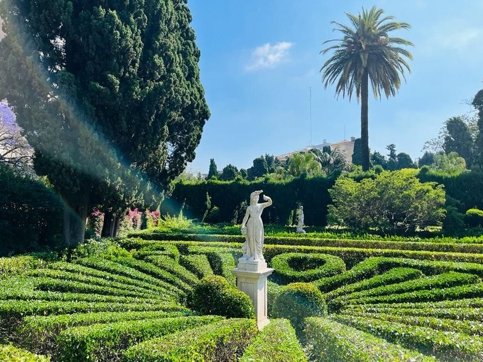
Jardines de Monforte
Nestled in the heart of Valencia, the Jardines de Monforte is a charming oasis that invites visitors to step away from the city's hustle and bustle. This elegant garden, designed in the mid-19th century, showcases a delightful blend of French neoclassical inspiration with Mediterranean elements. As you wander through its compact yet beautifully landscaped areas, encounter marble statues and ornamental fountains that evoke a sense of tranquility.
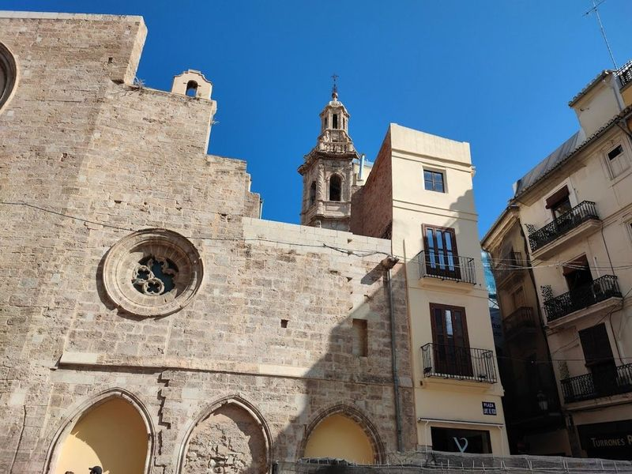
Church of Santa Catalina
The Church of Santa Caterina, also known as Saint Katherine, is located in Placa de Santa Catalina near the cathedral. Its tower combines Valencian Gothic and Baroque styles, and according to local folklore, it is depicted as the spouse of El Miguelete. The church's interior exudes a dark yet atmosphere that captivates visitors. Surrounding the area are charming shops, delightful restaurants, and several museums to explore.
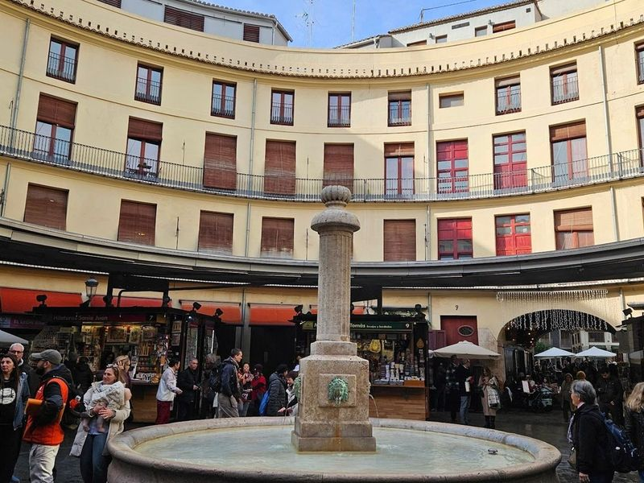
Mercado Municipal Plaza Redonda
Nestled in the heart of Valencia, Mercado Municipal Plaza Redonda is a delightful circular market that invites visitors to explore its vibrant atmosphere. This charming plaza, designed by Salvador Escrig Melchor in 1840, is surrounded by an array of traditional craft shops and tapas bars. As you wander through the stalls, discover a treasure trove of handmade products including lace, embroidery, ceramics, and unique souvenirs that capture the essence of Valencian culture.
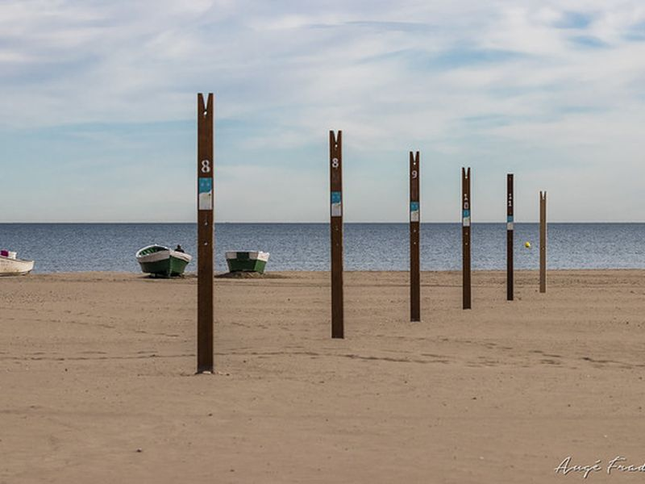
Platja de la Malva-rosa
A popular urban beach with golden sands, restaurants, and water sports, perfect for a day by the sea. The site forms part of Platja de la Malva-rosa's documented civic and cultural landscape within Valencia, with archives and visitor information available from municipal or regional heritage authorities.
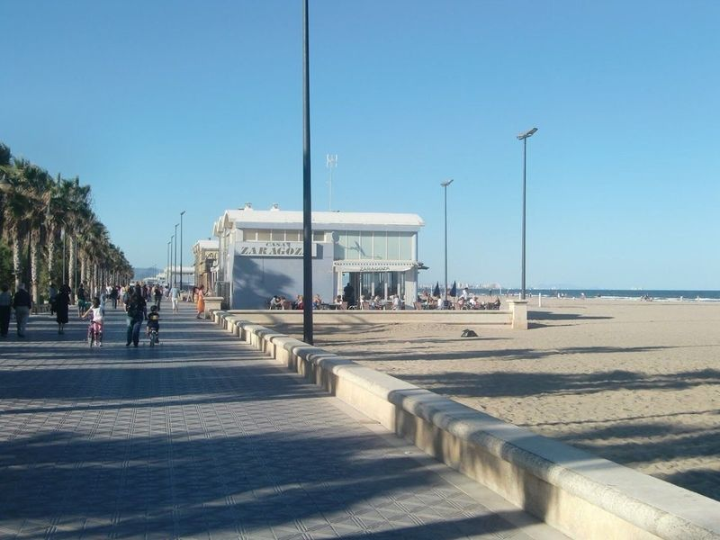
Malvarrosa beach (Valencia)
Malvarrosa beach in Valencia is a 1km-long city beach with soft sand and a bustling promenade lined with shops and restaurants. It's a popular spot for sunbathing, strolling along the waterfront, and enjoying outdoor cafes, bars, and clubs during the summer months. Accessible by public transportation, it offers a more relaxed and local atmosphere compared to Las Arenas beach.